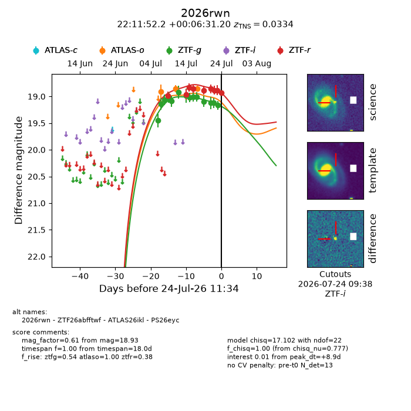
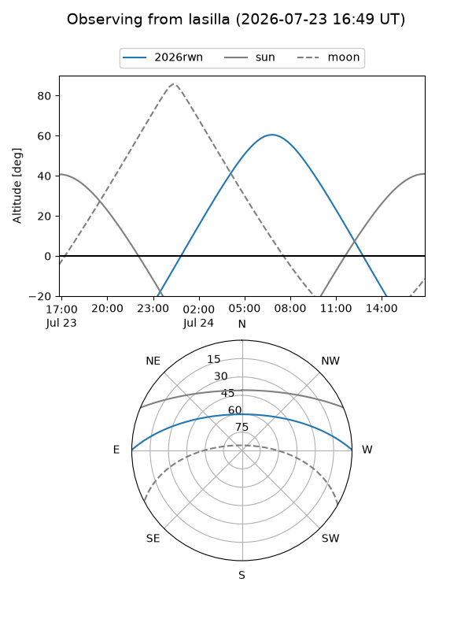
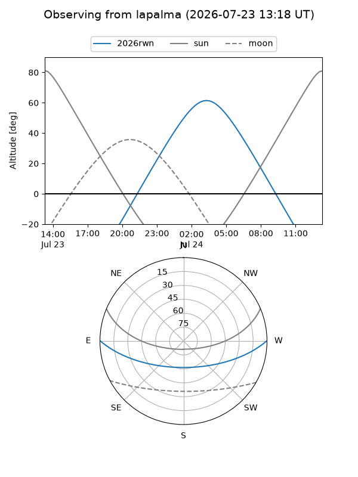
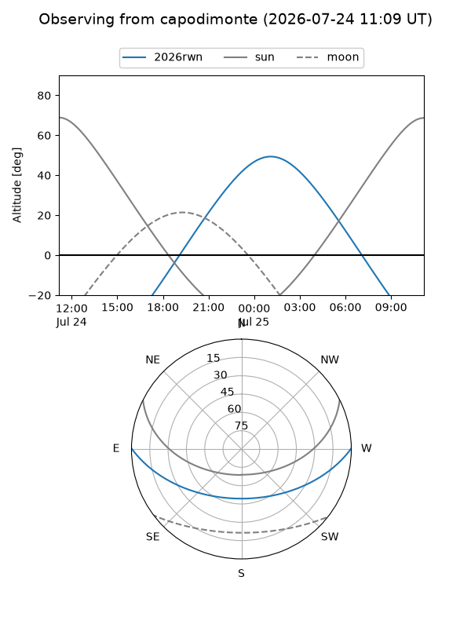
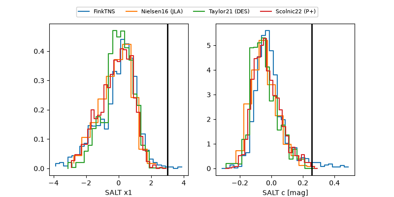

2026rwn
Target 2026rwn at 2026-07-24 11:36
Aliases and brokers:
FINK-ZTF: ztf.fink-portal.org/ZTF26abfftwf
Lasair-ZTF: lasair-ztf.lsst.ac.uk/objects/ZTF26abfftwf
ALeRCE-ZTF: alerce.online/object/ZTF26abfftwf
YSE-PZ: ziggy.ucolick.org/yse/transient_detail/2026rwn
TNS name: wis-tns.org/object/2026rwn
Direct TNS query: direct search
alt names
ZTF26abfftwf (ztf,fink_ztf)
2026rwn (tns,yse)
ATLAS26ikl (atlas)
PS26eyc (panstarrs)
Coordinates:
equatorial (ra, dec) = 332.9674,+0.10867
equatorial (HMS+DMS) = 22:11:52.17,+00:06:31.20
galactic (l, b) = (61.6606,-42.99861)
Flags:
TNS type: SN
TNS redshift: 0.0334
peak dt: +8.9
Photometry:
last atlaso=18.85, ztfg=19.17, ztfr=18.93
3 atlaso, 14 ztfg, 9 ztfr detections
Lightcurve

Visibility



Additional plots
